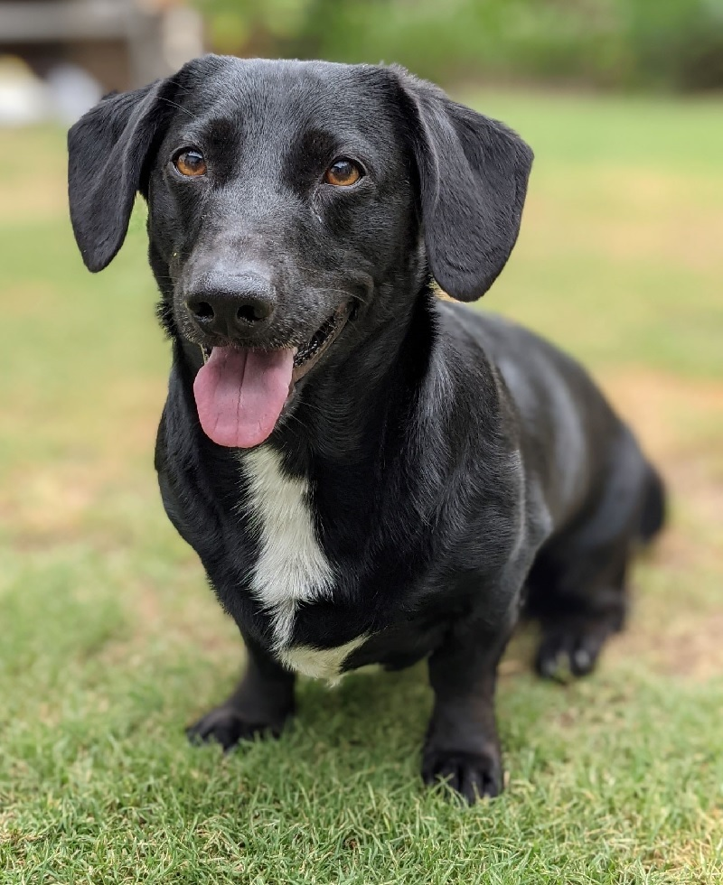
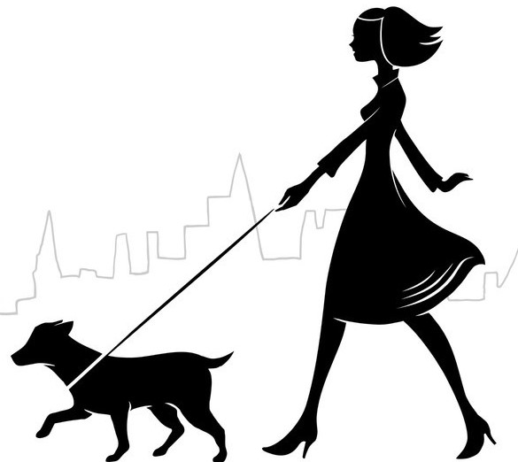

The inspiration behind this app that we at Team_Name_404 have named ‘Yogi’ came from Martin and named after one of his dogs when he came and crashed into one of our meetings where we were brainstorming app names. A little from Martin and how this idea came about:
“The idea behind this app came from when I wouldn’t have time take my dogs out for a walk. I would usually them out around lunchtime on my days off work, or before/after work. Because I am a shift worker, my roster is everchanging and it was hard to work out a routine/schedule for my dogs to walk them consistently.
One day I bumped into a dog walker who has her own dog walking business, where she takes people’s dogs out for walks and/or does check-ups and goes in to see if your dog is alright, has enough water and food during the day when you are busy and away from home for long hours. Every time we bumped into each other we would walk around the dog park and she would talk to me about her business. At one point she offered me the opportunity to earn some extra cash on the side if I ever wanted to help her out, as her client list is getting bigger.
This very offer planted an idea at the back of my head. Was there a service out there that connects you with multiple people/businesses in one go rather than having to individually search for a business or from word of mouth to find someone to walk your dog when you are busy. I thought to myself ‘What if there was an app that allows someone who is busy to quickly someone to walk their dog that is nearby? What if there was an app that offered people who love dogs the ability to spend time with one and earn some extra cash in their free time?’ and from these very questions the project idea sprung into action and starting my studies in a Bachelor’s of IT I was able to explore this idea even more”.
- Martin
Yogi is a mobile app that offers people who own dogs the ability to seek and book an individual to help them walk/look after their best friend if they are too busy during the day/week to walk and take care of them themselves during specific hours of the week. This app will not only be limited to those who need their dog(s) walked, but also for those who love dogs, but do not have the time, money, or space to own one themselves.
Through the statistics shown on Labour Market Information portal, approximately 13, 016, 600 people are employed in Australia (Labour Market Information Portal 2021). This number includes about 68.4% of people who work full time, with the number of full-time hours averaging around 39 hours a week. This means that roughly 5 days a week, people are working 8-hour days. Although this is an average, it does not account for over-time, hours worked after that is not registered, the time taken to travel to and from work, and those who have families and must take their children to and from extra-curriculum activities.
The premise of this app allows those with a very busy schedule to create a profile for their dogs, that gives a bit of information of what their dog is like in terms of temperament, age, size, etc, which will then be advertised through the app. Then those who are offering their services and want to spend time with a dog, will have their own profiles talking a bit about themselves, their experience with pets and animals, the type of dog they are willing to take on, and what their proposed hourly rate would be.
It will give the users the ability to swipe on profiles of either:
How we intend this app to work is both users will have the ability to swipe left and right on profiles of people and dogs that appeal to them. Where swiping left means no and this person/dog is not what you are looking for. Swiping right being this person/dog you are interested in and would like further information. From there if the users are interested in each other mutually, they are then able converse with each other, seeing if it is what they are looking for and if yes, those who own dog will then be able to book in a time and day that they need someone to take care of their dog, providing that this person has their time slot available.
The motivation for our application is quite simple – with approximate 40% of Australian households owning dogs (Animal Medicines Australia 2019) and an increasing number of people living in apartments (approximately 20% - 20% of that which live in apartments classified as ‘high-rise’) (ABS, 2016) who might not be able to comfortably house pets. We suggest there might exist in this cross-section a community of people who have dogs but are unable to walk them adequately and people unable to have dogs who wish to walk them.
With 70% of pet owners being aged 18-24 years old (Animal Medicines Australia, 2019) and 36% of US workers participating in the ‘gig-economy’ (see Uber, AirBnB, online marketplaces, etc) (Duszynski, 2021) we suggest there is also an age-based cross-section favoring our application.
We plan on using this as our stepping stone to gain traction. Once established, we can pivot our application to take advantage of the $13 billion a year Australians spend on pet services and products (Animal Medicines Australia 2019).
Yogi is an app aimed at those who own dogs but due to busy schedules, are unable to walk their fur companions regularly. Yogi is not just limited to those who own dogs, but also those who love pets and animals, especially dogs, but are unable to own one of their own because of various reasons. These reasons could be:
The app is intended to have various functions and features for dog owners that are seeking a dog walker and/or pet sitter, and people who are offering to walk dogs and/or to pet sit dogs. Some of the features will be repeating elements for both types of users, as they are the theme of the app. To simplify we will talk about the features of the two types of users individually.
For dog owners:
For dog walkers/sitters:
For security and assurance, a location feature will be used, where a GPS tracker will follow the walker. This information will only be shown to those who are using the service and will activate after the dog has been picked up at the booked/specified time. It will follow the dog walker and show where they are for the duration of the walk. A map with a distance travelled and route they have taken will be shown at the completion of the service. This is to allow owners of dogs to see on ogi whether their dog is being walked, and not just taken somewhere to sit around.
At the end of the service, both users will be able to leave feedback/ratings of each other. Like other apps that provide a service like Uber/UberEATS, DoorDash, etc. This will allow for quality assurance, where if either one of these individual users have their rating drop below a certain rating, they will be put on a probation period where if they continue to lose rating, they will be barred from the app.
Data is an aspect we are very aware of in building and running our app. As a startup, we will need to understand how to evaluate our data, how quickly we need access to it, how long we need to store it, and the level of security it needs. We need to be aware of regulatory requirements to adhere to (initially Australian regulations, then later in expanding globally – GDPR). Our processes and policies for an effective Data Governance plan will reflect our companies’ philosophy on the use, collection and management of the information provided by our users.
We will choose a platform enabling us to combine multi-structured data from our transactional systems, with semi-structured and unstructured data in our network system files and email servers, to ensure we do not waste time on efforts in data modeling.
AWS (Amazon Web Services) looks to be a good fit for infrastructure, cloud and analytics for storage and evaluation of our data, offering a range of services and scalability for each stage of our project/s. AWS also offers data protection and privacy, threat detection, identity, and access management, as well as network and application protection.
With plans to outsource our data storage – and possibly part of the management – we will need to choose a services provider able to ensure a compliant and highly secure environment. If the company has need of a physical premise in the future, we may look to hybrid solutions requiring appropriate on-site hardware.
Security will be a top priority, with encrypted data backed up in a secure outside location in the event of a natural disaster. A breach in security where access is gained to customer data could result in a loss of trust in our company, reduced profits and damage our reputation and hinder future growth.
Our governance plan will include ongoing auditable accountability and assessment across all our data collection and storage systems.
Chief Data Officer and Data Protection Officer roles will be appointed and responsible for data collected, with intent to resolve any issues with who in the company has ownership of this important information.
We will aim to give transparency to our customers by not asking them to waive unnecessary privacy rights via check boxes with language full of legal jargon not easily understood by our users. We will use their data responsibly, for further development of our application in delivering rewarding customer experiences.
We need to acknowledge that even with a third-party provider for cloud and data storage/analytics, as a company we are ultimately responsible for our customer’s data.
We understand the company plan for governance of our data is an ongoing collaborative and strategic practice.
For the app to be successful some goals need to be reached:
One of the more popular and easiest way to cash out and fund the app is to gain advertisements, this can be done through social channels like: Facebook, Instagram, LinkedIn, and Twitter. Connecting groups on platforms such as LinkedIn and FB to spread the word about the app will grab the attention of consumers. These posts should encourage people to download the app once ready. We can also start blogging or creating podcasts related to the dog walking app.
Video marketing is a great way to promote apps, and YouTube lets you do it for free! Promoting apps via YouTube is an effective way to help potential customers or clients connect and download the app. Putting together a quick overview video of the app and then uploading it to YouTube gives a nice sales tool that we can post on the homepage of the website or circulate in emails to prospective clients.
Looking to the future, Yogi hopes to impact its users and their pets in a positive emotional and physical ways. We aim to give confidence via the quality assurances described above, to pet owners that their dogs are in safe and loving hands while being walked or cared for by a person they have connected with via the app. Yogi provides those individuals who are not pet owners to spend time with dogs who they match with, as well as provide services with the hourly rates described.
As more people access the app, the changes will become further reaching. It seeks to promote goodwill in the local communities as it is likely users who match will live in easy proximity.
Yogi will increase the amount of time spent outdoors for people and the dogs, improving physical and mental health through exercise. It will enable those pet owners who do not feel they are able to take stress-free time away, to find a match in one of our users who will come and care for their dog/s in their absence. It will be mutually beneficial in connecting animal lovers in these ways.